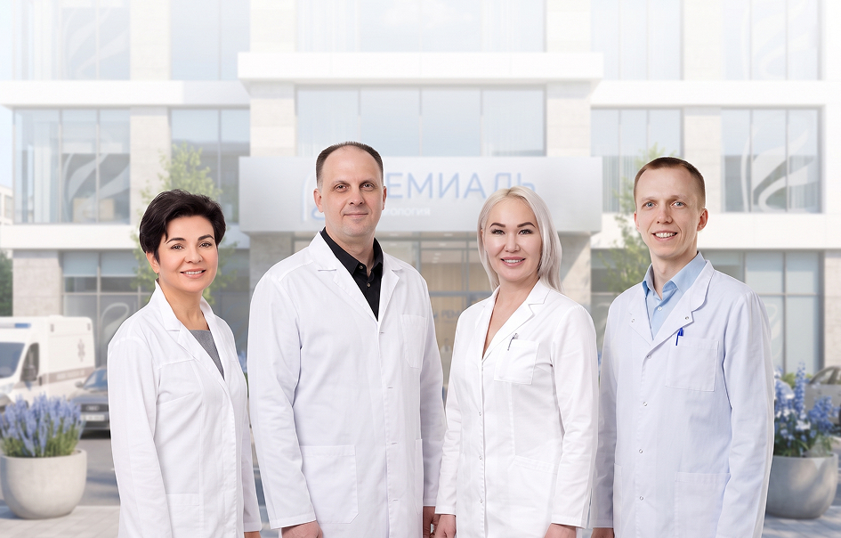

Наркологическая клиника “Ремиаль” в Москве
Обращение за наркологической помощью — это шаг, который человек делает в сложный период своей жизни. Мы делаем все, чтобы этот шаг был максимально безопасным и комфортным. В частном наркологическом центре «Ремиаль» в Москве помощь доступна круглосуточно. Врачи-психиатры-наркологи работают в стационаре, принимают в клинике и выезжают на дом. Здесь лечат алкогольную и наркотическую зависимость, проводят детоксикацию и кодирование, выводят из запоя и снимают абстиненцию.
Решение о методах помощи врач принимает только после осмотра. Клиника имеет лицензию на медицинскую деятельность, информация о пациентах защищена врачебной тайной.


Мы лечим не только зависимость, а человека целиком

Врачи-эксперты с опытом более 15 лет

Реаниматологи в составе команды

Лицензированная клиника
Почему выбирают наркологическую клинику «Ремиаль»


Заголовок
Обращение за наркологической помощью — это шаг, который человек делает в сложный период своей жизни. Мы делаем все, чтобы этот шаг был максимально безопасным и комфортным. В частном наркологическом центре «Ремиаль» в Москве помощь доступна круглосуточно. Врачи-психиатры-наркологи работают в стационаре, принимают в клинике и выезжают на дом. Здесь лечат алкогольную и наркотическую зависимость, проводят детоксикацию и кодирование, выводят из запоя и снимают абстиненцию.
Решение о методах помощи врач принимает только после осмотра. Клиника имеет лицензию на медицинскую деятельность, информация о пациентах защищена врачебной тайной.
Фотографии клиники


Как мы работаем


Круглосуточно. Анонимно
8 (495) 540-57-86Часто задаваемые вопросы
Лицензии